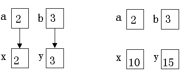

前面已经介绍过，函数的参数分为形参和实参两种。在本小节中，进一步介绍形参、实参的特点和两者的关系。形参出现在函数定义中，在整个函数体内都可以使用，离开该函数则不能使用。实参出现在主调函数中，进入被调函数后，实参变量也不能使用。形参和实参的功能是作数据传送。发生函数调用时，主调函数把实参的值传送给被调函数的形参从而实现主调函数向被调函数的数据传送。
函数的形参和实参具有以下特点：
1.形参变量只有在被调用时才分配内存单元，在调用结束时，即刻释放所分配的内存单元。因此，形参只有在函数内部有效。函数调用结束返回主调函数后则不能再使用该形参变量。
2.实参可以是常量、变量、表达式、函数等，无论实参是何种类型的量，在进行函数调用时，它们都必须具有确定的值，以便把这些值传送给形参。因此应预先用赋值，输入等办法使实参获得确定值。
3.实参和形参在数量上，类型上，顺序上应严格一致，否则会发生类型不匹配”的错误。
4.函数调用中发生的数据传送是单向的。即只能把实参的值传送给形参，而不能把形参的值反向地传送给实参。 因此在函数调用过程中，形参的值发生改变，而实参中的值不会变化。

main()
{
int n;
printf("input number\n");
scanf("%d",&n);
s(n);
printf("n=%d\n",n);
}
int s(int n)
{
int i;
for(i=n-1;i>=1;i--)
n=n+i;
printf("n=%d\n",n);
}
本程序中定义了一个函数s，该函数的功能是求∑ni的值。在主函数中输入n值，并作为实参，在调用时传送给s 函数的形参量n( 注意，本例的形参变量和实参变量的标识符都为n，但这是两个不同的量，各自的作用域不同)。在主函数中用printf 语句输出一次n值，这个n值是实参n的值。在函数s中也用printf 语句输出了一次n值，这个n值是形参最后取得的n值0。从运行情况看，输入n值为100。即实参n的值为100。把此值传给函数s时，形参n的初值也为100，在执行函数过程中，形参n的值变为5050。返回主函数之后，输出实参n的值仍为100。可见实参的值不随形参的变化而变化。
函数的值是指函数被调用之后，执行函数体中的程序段所取得的并返回给主调函数的值。如调用正弦函数取得正弦值，调用例8.1的max函数取得的最大数等。对函数的值(或称函数返回值)有以下一些说明：
1) 函数的值只能通过return语句返回主调函数。
return 语句的一般形式为：
return 表达式；
或者为：
return (表达式)；
该语句的功能是计算表达式的值，并返回给主调函数。在函数中允许有多个return语句，但每次调用只能有一个return 语句被执行，因此只能返回一个函数值。
2) 函数值的类型和函数定义中函数的类型应保持一致。如果两者不一致，则以函数类型为准，自动进行类型转换。
3) 如函数值为整型，在函数定义时可以省去类型说明。
4) 不返回函数值的函数，可以明确定义为“空类型”，类型说明符为“void”。如例8.2中函数s并不向主函数返函数值，因此可定义为：
void s(int n)
{ ……
}
一旦函数被定义为空类型后，就不能在主调函数中使用被调函数的函数值了。例如，在定义s为空类型后，在主函数中写下述语句
sum=s(n);
就是错误的。
为了使程序有良好的可读性并减少出错， 凡不要求返回值的函数都应定义为空类型。
前面已经说过，在程序中是通过对函数的调用来执行函数体的，其过程与其它语言的子程序调用相似。
Ｃ语言中，函数调用的一般形式为：
函数名(实际参数表)
对无参函数调用时则无实际参数表。实际参数表中的参数可以是常数，变量或其它构造类型数据及表达式。各实参之间用逗号分隔。
在Ｃ语言中，可以用以下几种方式调用函数：
1.函数表达式：函数作为表达式中的一项出现在表达式中，以函数返回值参与表达式的运算。这种方式要求函数是有返回值的。例如：z=max(x,y)是一个赋值表达式，把max的返回值赋予变量z。
2.函数语句：函数调用的一般形式加上分号即构成函数语句。例如： printf ("%d",a);scanf ("%d",&b);都是以函数语句的方式调用函数。
3.函数实参：函数作为另一个函数调用的实际参数出现。这种情况是把该函数的返回值作为实参进行传送，因此要求该函数必须是有返回值的。例如： printf("%d",max(x,y)); 即是把max调用的返回值又作为printf函数的实参来使用的。在函数调用中还应该注意的一个问题是求值顺序的问题。所谓求值顺序是指对实参表中各量是自左至右使用呢，还是自右至左使用。对此，各系统的规定不一定相同。介绍printf 函数时已提到过，这里从函数调用的角度再强调一下。
main()
{
int i=8;
printf("%d\n%d\n%d\n%d\n",++i,--i,i++,i--);
}
如按照从右至左的顺序求值。运行结果应为：
8
7
7
8
如对printf语句中的++i，--i，i++，i--从左至右求值，结果应为：
9
8
8
9
应特别注意的是，无论是从左至右求值， 还是自右至左求值，其输出顺序都是不变的， 即输出顺序总是和实参表中实参的顺序相同。由于Turbo C现定是自右至左求值，所以结果为8，7，7，8。上述问题如还不理解，上机一试就明白了。